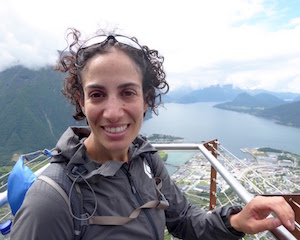

Yeara KozlovPhD student Computer Graphics Lab, ETH Zürich Disney Research yeara.kozlov[at]disneyresearch.com |
 |
I’m a joint PhD student at the Computer Graphics Lab at ETH Zürich and Disney Research.
I am part of the Capture and Effects group at Disney Research Zurich. My research interests include physically based simulation, computer vision and geometry processing.
I received my M.Sc in Visual Computing from Saarland University, Germany. My Master’s was written in affiliation with the Department of Computer Graphics in Max Planck Institute for Informatics, Saarbrücken, Germany. Previously I graduated from the Technion, Israel with a B.Sc in Physics.
I am one of the co-leaders of CSNOW, the Network of Women in Computer Science at ETH Zürich.
Y. Kozlov, D. Bradley, M. Bächer, B. Thomaszewski, T. and M. Gross
Enriching Facial Blendshape Rigs with Physical Simulation
To appear: Proceedings of Eurographics (Lyon,France,, April 24-28, 2017), Computer Graphics Forum, vol. 36, no. 2
[website]
A. Bermano, T. Beeler, Y. Kozlov, D. Bradley, B. Bickel, M. Gross
Detailed Spatio-Temporal Reconstruction of Eyelids
Proceedings of ACM SIGGRAPH (Los Angeles, USA, August 9-13, 2015)
[pdf] [website]
Kozlov, Y., Esturo, J. M., Seidel, H. P., & Weinkauf, T.
Regularized Harmonic Surface Deformation.
Technical report: arXiv preprint arXiv:1408.3326.
[pdf] [website]
Kozlov, Y.
Analysis of Energy Regularization for Harmonic Surface Deformation.
Master Thesis, Universität des Saarlandes, Saarbrücken. 2014.
[pdf]